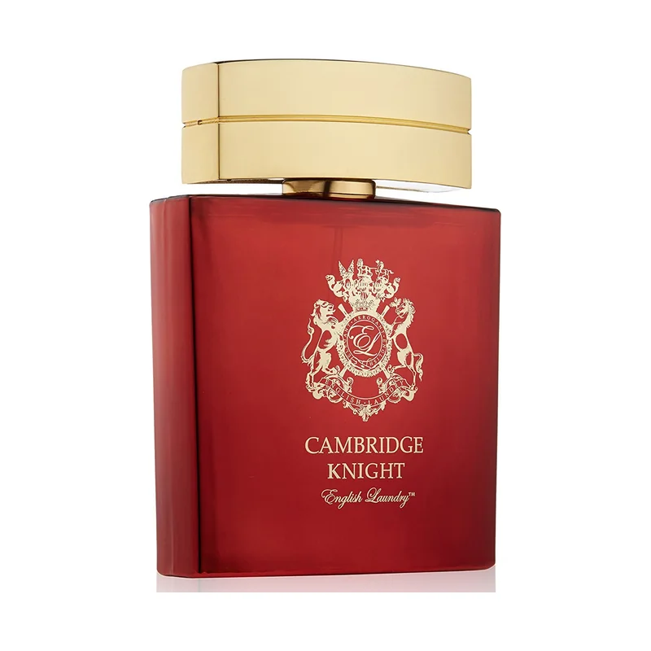
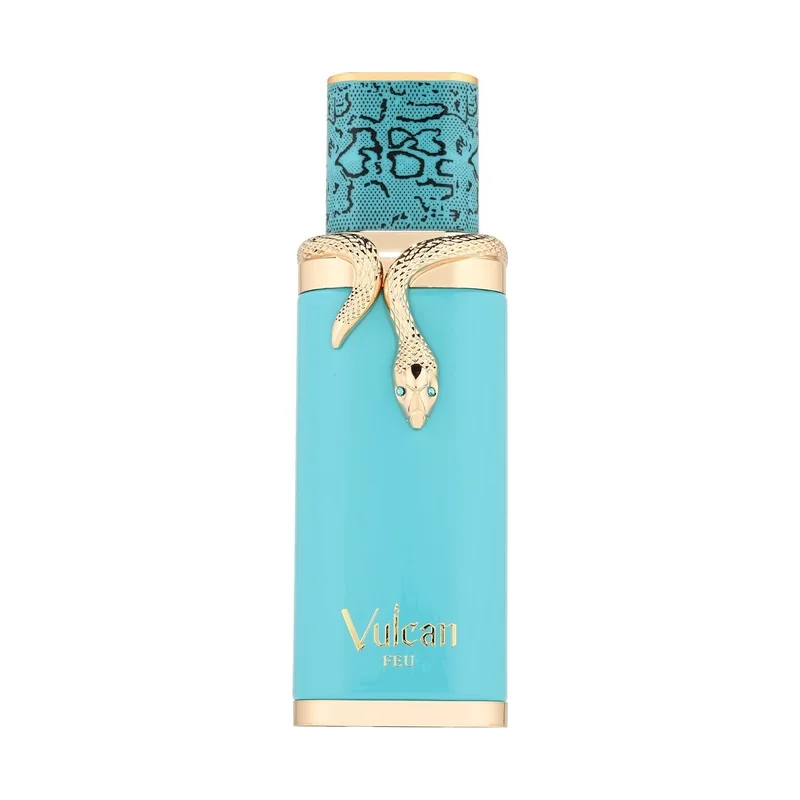

English Laundry
London Eau de Parfum
γ Gamma Inspired by · Eau de Parfum · 2018 In collection
Randy's rating7/10
Public rating8/10
Overall R15.7/21
Normalized N0.748
R = 7 × 1.1 + 8 × 1 = 15.7 of 21 · N = 15.7 ÷ 21 = 0.748 How scores work
Notes
Top notes
- pineapple
- blackberry
- apple
Heart notes
- juniper
- patchouli
- bergamot
- ambergris
Base notes
- oakmoss
- musk
- jasmine
- vanilla
Details
| House | English Laundry |
|---|---|
| Type | Inspired by · γ Gamma |
| Concentration | Eau de Parfum |
| Released | 2018 |
| Perfumer | Christopher Wicks |
| Scent family | Fruity, Woody, Musky & Powdery |
| Best seasons | Spring, Summer, Fall |
| Similar to | Creed Aventus Armaf Club de Nuit Intense Man Eau de Toilette Montblanc Explorer Al Haramain L'Aventure |
Sources
Fragrantica 4.02/5 (about 8.0/10) from 354 votes; Parfumo 7.9/10 from 27 ratings (longevity 6.1, sillage 6.2, value 7.8). Synthesized as 8, weighting the larger Fragrantica sample. Checked 2026-11-13.
Other Suggestions
-

English LaundryCambridge Knight Eau de ParfumRandy6Public 8N 0.695 -
 AfnanRare Reef Extrait de ParfumRandy5.75Public 8N 0.682
AfnanRare Reef Extrait de ParfumRandy5.75Public 8N 0.682 -
 Ahmed Al MaghribiIgnite Oud Eau de ParfumRandy8.75Public 9N 0.887
Ahmed Al MaghribiIgnite Oud Eau de ParfumRandy8.75Public 9N 0.887 -

French AvenueVulcan Feu Eau de ParfumRandy9Public 8N 0.852 -
 AfnanTurathi Blue Homme Eau de ParfumRandy9Public 8N 0.852
AfnanTurathi Blue Homme Eau de ParfumRandy9Public 8N 0.852